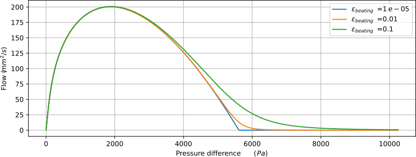
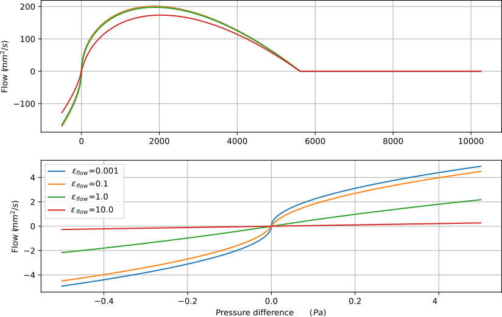

Duduk model
For more details, see the companion article ....
Time dependant variable:
- reed opening \(h\)
- downsrteam pressure \(p\)
- flow through the reed \(u\)
Physical constants:
- mouth pressure \(p_m\)
- reed frequency \(F_r\)
- reed stifness \(K_r\)
- reed quality factor \(Q_r\)
- reed opening at rest \(H\)
- width of the reed \(w\)
- equivalent length for the reed flow \(L_r\)
- regularisation of the non linear characteristic \(\varepsilon_{flow}, \varepsilon_{beating}\)
The reed is modeled as a one degree of freedom oscillator driven by the pressure differential
\begin{cases}
\ddot{h}+\frac{\omega_r}{Q_r} \dot{h} + \omega^2_r(h-H) = -(p_m-p) \frac{\omega_r^2}{K} \\
\hat{p}(\omega) = Z(\omega) \hat{u}(\omega) \\
u = w h^+ \mathrm{sgn}(p_m-p)\sqrt{\frac{2|p_m-p|}{\rho}} - wL_r \frac{d}{dt}
\end{cases}
The resonator is described by its input impedance in the Fourier domain
\begin{equation}
\hat{p}(\omega) = Z(\omega) \hat{u}(\omega)
\end{equation}
where \(Z\) is decomposed as
\begin{equation}
\label{eq:impedance_cylinder}
Z(\omega) = Z_c \sum_n \frac{C_n}{j\omega - s_n}
\end{equation}
where \(Z_c\) represents the characteristic impedance \(Z_c = \frac{\rho c_0}{\pi R^2}\).
Last equation linking the pressure differential to the flow through the reed obtained through Bernoulli's equation, where \(w\) is the reed width,
\(h^+= \max(h, 0)\) (so that \(w h^+\) represents the opening section when \(h \ge 0\)) and \(\rho\) is the air density.
\begin{equation}
u = w h^+ \mathrm{sgn}(p_m-p)\sqrt{\frac{2|p_m-p|}{\rho}}
\end{equation}
To avoid numerical instabilities, this equation is regularized using a heuristic formula for \(h^+\)
\begin{equation}
h^+ \to \frac{1}{2}\left(h+\frac{h^2+\frac{1}{2}\varepsilon_{beating} H^2}{\sqrt{h^2+\varepsilon_{beating} H^2}}\right)
\end{equation}
(whose effect is shown in the figure below)

and adding a Poiseuille term for the flow, which leads to
\begin{equation}
\mathrm{sgn}(\Delta p)\sqrt{\frac{2|\Delta p|}{\rho}} \to \mathrm{sgn}(\Delta p) \frac{-\varepsilon_{flow}+\sqrt{\varepsilon_{flow}^2+2\rho |\Delta p|}}{\rho}
\end{equation}
